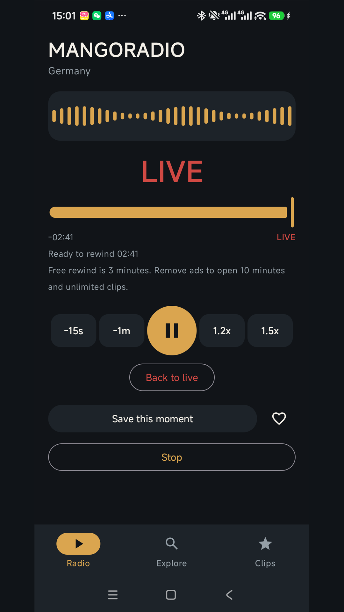
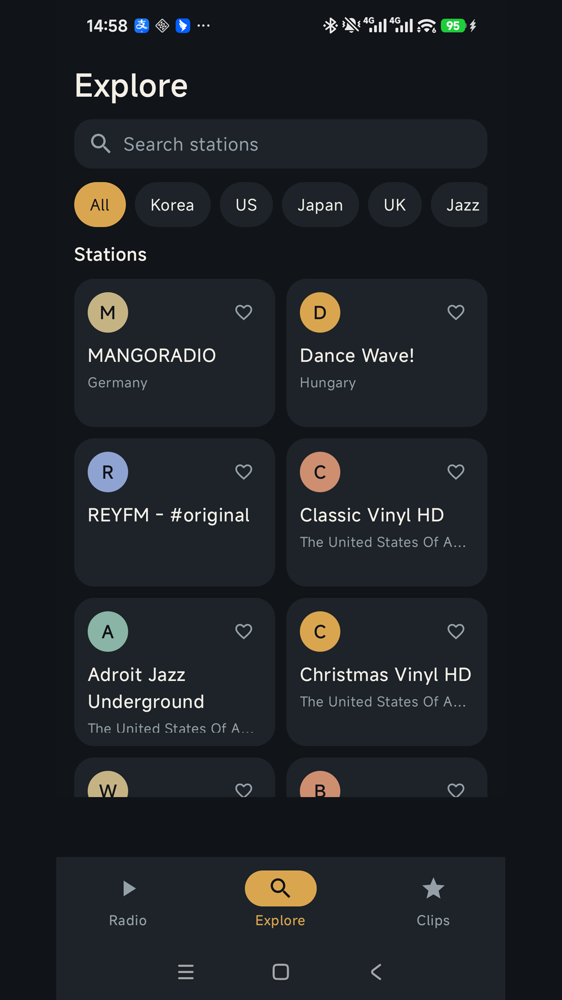
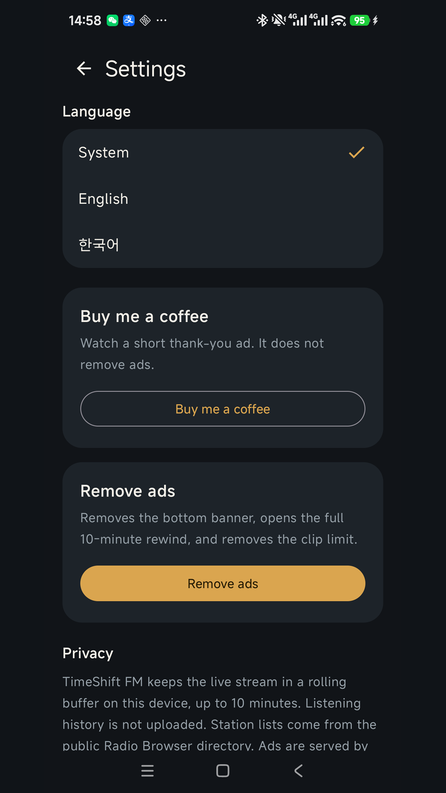

Apps / TimeShift FM
Internet radio for AndroidTimeShift FM
Play a station, then step back to the moment that just passed. After you start listening, this phone keeps the recent audio. There is no TimeShift server. Now on Google Play.
Get it on Google PlayScreenshots



The app
TimeShift FM plays internet radio. The buffer starts when you start a station. Free rewind is 3 minutes. Removing ads opens 10 minutes.
Timeline
Slide between live and the recent past. Jump back 15 seconds or 1 minute, then return to live. 1.2x and 1.5x play while you are behind live.
Clips
Save about 45 seconds of what you were hearing. Free includes 5 saved clips. Removing ads removes that limit. Clips stay on this phone.
Stations
Search by name and pin favorites. Filters cover Korea, the US, Japan, the UK, plus jazz, pop, news, and talk. The full list is not limited to one country.
Directory
Station addresses come from the public Radio Browser directory. If that directory cannot be reached, the app shows a few built-in stations.
Ads
A banner stays at the bottom until you remove ads. Buy me a coffee in Settings plays a short thank-you ad. It does not remove ads.
On the phone
There is no account and no TimeShift server. The interface is in English and Korean. Listening history is not uploaded.
Free on Google Play, with ads and a one-time in-app purchase. Rated Everyone. Google Play · Privacy policy